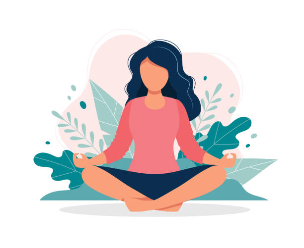
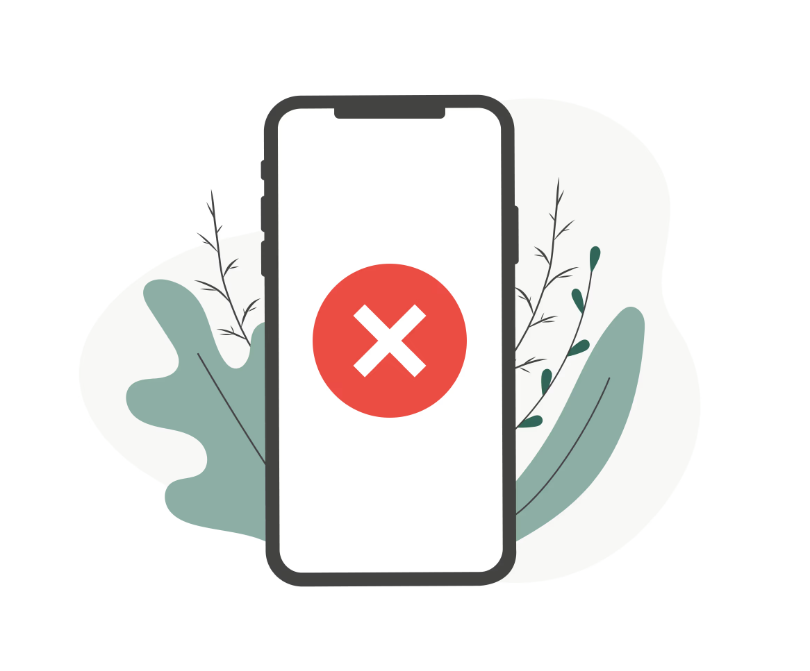
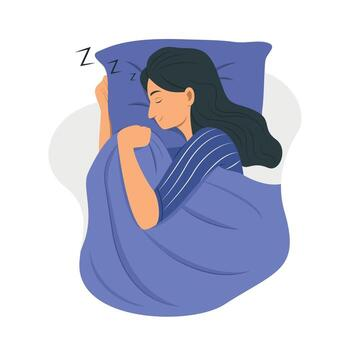

Improving your daily routine is valuable, whether it involves making a few small changes or simply reevaluating parts of your day to function better. Below, I've listed a few habits I've added to my own routine to improve my everyday life.

Meditation is known to be very beneficial in various ways. Some of the largest benefits include lowered stress levels, improved sleep, supports emotional health, decreased blood pressure and it can even help control pain. Personally, meditation has significantly reduced my stress levels. Visit the link below to learn more about why meditation should be added to your daily routine.
https://www.healthline.com/nutrition/12-benefits-of-meditation

Our generation struggles with excessive screen time, so it's important to pause and consider how much of your day is spent on a screen instead of being present in the world around you.
Reducing screen time can support both your physical and mental health—improving focus, enhancing brain function, supporting better sleep, improving posture, and reducing eye strain.
Cutting back is especially helpful before bed. Try reading a book, journaling, or doing another calming activity instead. Check out the link below to learn more about the benefits of reducing screen time!
https://www.jaimedicalsystems.com/health-benefits-of-reducing-your-screen-time/

A consistent sleep schedule is essential for maintaining good health. Getting at least eight hours of sleep at roughly the same time each night can strengthen your immune system, boost your mood, enhance cognitive function, and even support cardiovascular health. Many people overlook how crucial sleep truly is, and as a result, they end up feeling fatigued or getting sick, which can impact their days ahead. For more tips on improving your sleep routine, visit the link below.
https://sleep.me/post/benefits-of-sleep-schedule